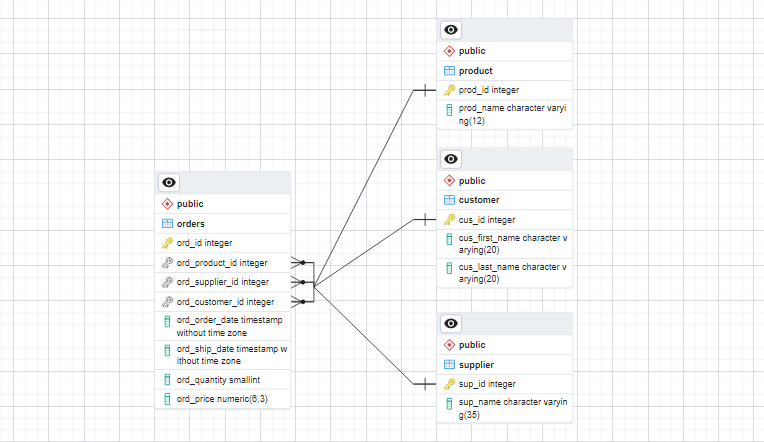

CREATE DATABASE order_flow;In today’s data-driven world, businesses often find themselves grappling with large amount of data in order to derive meaningful insights. As this data volume increases, the performance of their existing small-scale data storage solutions, such as storing data in a single CSV file, starts to deteriorate. Consequently, businesses face the risk of not keeping up with the latest market trends and customer purchase patterns. To address this challenge, migrating the data into a database management system, either on-site or in the cloud, provides an excellent solution. In this article, we will explore the process of migrating a single CSV file that contains records tracking customer orders. Additionally, we will delve into the concept of database normalization and outline the steps involved in moving the data.

Understanding database normalization.
Before delving into the details of data migration and normalization of our database, it is crucial to understand the meaning of normalization. So what is database normalization, Database normalization is process of organizing and structuring data to minimize redundancy, improve data integrity, and optimize database performance. Simply put, it involves breaking down a database into multiple related tables, each serving a specific purpose.
There are several important reasons for optimizing a database, Such as to:
- Improved data integrity by reducing redundancy and inconsistency.
- Efficiently utilize storage by eliminating data duplications.
- Enhance performance and ensure quick response times.
- Facilitate flexibility and scalability for future modifications and expansions.
- Achieve complience and security by implementing a normalized structure that simplifies access control.
While i won’t delve too deeply into these concepts to stay focused on the task at hand, it is crucial to have a good understanding of these principles for effective database management.
Creating the Database
Before migrating your data from a single csv file into a database, it is important to plan the database structure and consider how you will handle data redundancy to ensure data consistency and integrity. Additionaly, there are other important principles to look out for, such as establishing proper relationships between the tables, defining primary and foreign keys, and implementing approprate data validation rules.
We will be using the postgreSQL relational database for the migration process and data storage. However, the process will be similar for other relational database. To begin, we will create a database called order_flow where we will be working on as we progress through this article.
The above query will create a database and establish a new session after you run it. Now that we have a functional database, the next step is to create an initial table that will serve as the container for the data currently residing in the CSV file.
CREATE TABLE denormalized_table (
table_id SERIAL PRIMARY KEY,
product_name VARCHAR(12),
supplier_name VARCHAR(35),
customer_id INTEGER,
order_date TIMESTAMP,
ship_date TIMESTAMP,
quantity SMALLINT,
price DECIMAL(6, 3),
customer_first_name VARCHAR(20),
customer_last_name VARCHAR(20)
);After running the above query, you are likely to see a message that says Query returned successfully This message simply indicates that our table has been created successfully. To further confirm the table’s present status, you can run the query below, which will return the column names and an empty row. The empty row is expected since we haven’t inserted any records yet.
SELECT * FROM denormalized_table;| table_id | product_name | supplier_name | customer_id | order_date | ship_date | quantity | price | customer_first_name | customer_last_name |
|---|
Now it’s time to import the data from the CSV file. We will use the COPY command in PostgreSQL, which allows for importing CSV files. Additionally, we will inclued the CSV HEADER option at the end of the query, without the CSV HEADER option, PostgreSQL would treat the first row of the CSV file as data and attempt to insert it into the table, leading to incorrect data placement and potential data integrity issues. Therefore it is good practice to include the option when importing CSV files.
COPY denormalized_table (
table_id,
product_name,
supplier_name,
customer_id,
order_date,
ship_date,
quantity,
price,
customer_first_name,
customer_last_name
)
FROM 'data/orders.csv'
DELIMITER ','
CSV HEADER;SELECT * FROM denormalized_table LIMIT 5;| table_id | product_name | supplier_name | customer_id | order_date | ship_date | quantity | price | customer_first_name | customer_last_name | |
|---|---|---|---|---|---|---|---|---|---|---|
| 0 | 0 | Product E | Austin-Phillips | 79294 | 2023-04-19 13:25:16.815733 | 2023-04-26 13:25:16.815733 | 2 | 104.212 | Christine | Gregory |
| 1 | 1 | Product C | Tucker Ltd | 46269 | 2022-12-12 13:25:16.815733 | 2022-12-19 13:25:16.815733 | 10 | 109.078 | Arthur | Thompson |
| 2 | 2 | Product E | Austin-Phillips | 6836 | 2023-02-20 13:25:16.815733 | 2023-02-24 13:25:16.815733 | 7 | 110.403 | Mary | Diaz |
| 3 | 3 | Product C | Adams Group | 45014 | 2023-04-09 13:25:16.815733 | 2023-04-16 13:25:16.815733 | 5 | 119.123 | Francisco | Miller |
| 4 | 4 | Product E | Tucker Ltd | 74464 | 2023-07-06 13:25:16.815733 | 2023-07-11 13:25:16.815733 | 5 | 109.081 | Miguel | Thomas |
The duration of the data import process may vary depending on the size of your data. Once the data import is complete, you will receive a message similar to the previous one indicating that the query has returned successfully. If you encounter any issues while importing the data, it is advisable to verify whether the column data types in your table match the data type definitions in the CSV file. Addtionally, ensure that the column positions in both instances are aligned correctly.
We have completed the first part of the process by successfully migrating our data into PostgreSQL. In the next part we will begin creating the specific entities.
Database Normalization
When separating your data into separate tables, it is crucial to understand the concept of normal forms (1NF, 2NF, 3NF, etc.), as these guidelines will assist you in creating an optimized database. Here’s a brief summary of the first three normal forms:
First Normal Form (1NF):Eliminate data redundancy and ensures atomic values by organizing data into separate columns within a table.
Second Normal Form (2NF):Builds upon the 1NF and addresses partial depencencies by ensuring that non-key attributes are fully dependent on the entire primary key.
Third Normal Form (3NF):Further refines the normalization process by eliminating transitive dependencies, ensuring that non-key attributes are not dependent on other non-key attributes.
By adhering to the principles of normalization and applying the approprate normal forms, you can effectively structure your database.
Now, we will start by creating a Product Table that will solely contain infomation about the product and specific attributes related to each listed product.
CREATE TABLE product (
prod_id SERIAL PRIMARY KEY,
prod_name VARCHAR(12) NOT NULL
);
SELECT * FROM product;| prod_id | prod_name |
|---|
Just like the product table, we will create a Supplier Table that will store information about the suppliers. This table will allow us capture specific attributes related to each supplier.
CREATE TABLE supplier(
sup_id SERIAL PRIMARY KEY,
sup_name VARCHAR(35) NOT NULL
);
SELECT * FROM product;| sup_id | sup_name |
|---|
The Customer Table will store important attributes such as unique customer IDs, first names and last names. These attributes will allow us to uniquely identify and manage customer infomation within the database.
CREATE TABLE customer (
cus_id INTEGER PRIMARY KEY,
cus_first_name VARCHAR(20),
cus_last_name VARCHAR(20)
);
SELECT * FROM customer;| cus_id | cus_first_name | cus_last_name |
|---|
Finally, we have the Order Table, which will serve as our fact table. This table will include fields such as order ID, product ID, suppler ID, customer ID, order date, ship date, quantity ordered and unit price.
CREATE TABLE orders(
ord_id SERIAL PRIMARY KEY,
ord_product_id SERIAL,
ord_supplier_id SERIAL,
ord_customer_id INTEGER,
ord_order_date TIMESTAMP,
ord_ship_date TIMESTAMP,
ord_quantity SMALLINT,
ord_price DECIMAL(6, 3),
CONSTRAINT fk_ord_product FOREIGN KEY(ord_product_id) REFERENCES product(prod_id),
CONSTRAINT fk_ord_supplier FOREIGN KEY(ord_supplier_id) REFERENCES supplier(sup_id),
CONSTRAINT fk_ord_customer FOREIGN KEY(ord_customer_id) REFERENCES customer(cus_id)
);
SELECT * FROM orders;| ord_id | ord_product_id | ord_supplier_id | ord_customer_id | ord_order_date | ord_ship_date | ord_quantity | ord_price |
|---|
Since the order table serves as our fact table, it will establish foreign keys to the tables mentioned earlier. These foreign keys establish the relationship between the order table and the product, supplier, and customer tables. By linking the fact table with the ralated dimension table through foreign keys, we can perform comprehensive analyses and generate meaningful insights by combining data from different tables.
Adding data to the various database tables
After successfully creating the various tables, the next step is to migrate the centralized data into their respective tables.
For the Product Table, the process is straightforward. From the denormalized_table, we only need the unique product name. PostgreSQL will automatically generate and populate the product ID, which serves as the primary key for the product table.
INSERT INTO product(prod_name)
SELECT DISTINCT product_name
FROM denormalized_table
ORDER BY 1;
SELECT * FROM product;| prod_id | prod_name | |
|---|---|---|
| 0 | 1 | Product A |
| 1 | 2 | Product B |
| 2 | 3 | Product C |
| 3 | 4 | Product D |
| 4 | 5 | Product E |
We will follow a similar process for the Supplier Table. From the denormalized_table, we will transfer the unique supplier name to the supplier table while the supplier ID will be automatically generated and populated.
INSERT INTO supplier(sup_name)
SELECT DISTINCT supplier_name
FROM denormalized_table
ORDER BY 1;
SELECT * FROM supplier;| sup_id | sup_name | |
|---|---|---|
| 0 | 1 | Adams Group |
| 1 | 2 | Austin-Phillips |
| 2 | 3 | Larsen, Ballard and Hudson |
| 3 | 4 | Pruitt LLC |
| 4 | 5 | Tucker Ltd |
For the Customer Table, we will transfer both the customer’s first name and last name from the denormalized_table into the respective columns of the customer table. Additionally, the unique customer ID will also be migrated into the customer table preserving the primary key association.
INSERT INTO customer(
cus_id,
cus_first_name,
cus_last_name
)
SELECT DISTINCT customer_id, customer_first_name, customer_last_name
FROM denormalized_table
ORDER BY 1;
SELECT * FROM customer LIMIT 5;| cus_id | cus_first_name | cus_last_name | |
|---|---|---|---|
| 0 | 1 | Christine | Fernandez |
| 1 | 2 | Eric | Jensen |
| 2 | 3 | Eric | Stanley |
| 3 | 4 | Rebecca | Gomez |
| 4 | 5 | Sarah | Henderson |
Finally, when migrating data into the Orders Table, we will take a different approach. All the attributes for each order will be directly transferred into the orders table, except for the foreign keys representing the product and supplier. To assign the appropriate product and supplier IDs to each record, we will use a subquery. This subquery will extract the respective IDs from the product and supplier tables based on their names. By leveraging this approach, we can accurately establish the relatioships between orders, products and suppliers within the order table, ensuring data consistency and integrity.
INSERT INTO orders(
ord_id,
ord_product_id,
ord_supplier_id,
ord_customer_id,
ord_order_date,
ord_ship_date,
ord_quantity,
ord_price
)
SELECT
table_id,
(SELECT prod_id FROM product WHERE prod_name = product_name) AS ord_product_id,
(SELECT sup_id FROM supplier WHERE sup_name = supplier_name) AS ord_supplier_id,
customer_id,
order_date,
ship_date,
quantity,
price
FROM denormalized_table
ORDER BY 1;
SELECT * FROM orders LIMIT 5;| ord_id | ord_product_id | ord_supplier_id | ord_customer_id | ord_order_date | ord_ship_date | ord_quantity | ord_price | |
|---|---|---|---|---|---|---|---|---|
| 0 | 0 | 5 | 2 | 79294 | 2023-04-19 13:25:16.815733 | 2023-04-26 13:25:16.815733 | 2 | 104.212 |
| 1 | 1 | 3 | 5 | 46269 | 2022-12-12 13:25:16.815733 | 2022-12-19 13:25:16.815733 | 10 | 109.078 |
| 2 | 2 | 5 | 2 | 6836 | 2023-02-20 13:25:16.815733 | 2023-02-24 13:25:16.815733 | 7 | 110.403 |
| 3 | 3 | 3 | 1 | 45014 | 2023-04-09 13:25:16.815733 | 2023-04-16 13:25:16.815733 | 5 | 119.123 |
| 4 | 4 | 5 | 5 | 74464 | 2023-07-06 13:25:16.815733 | 2023-07-11 13:25:16.815733 | 5 | 109.081 |
And that’s it! We have successfully migrated and normalised our database. Before proceeding to delete the denormalized_table, it is good practice to test the relatioships between these tables. while our database is relatively simple, it is still valuable to verify the relationships that exist among the tables.
Order and Product Relationship
SELECT *
FROM orders
JOIN product ON ord_product_id = prod_id
LIMIT 10;| ord_id | ord_product_id | ord_supplier_id | ord_customer_id | ord_order_date | ord_ship_date | ord_quantity | ord_price | prod_id | prod_name | |
|---|---|---|---|---|---|---|---|---|---|---|
| 0 | 0 | 5 | 2 | 79294 | 2023-04-19 13:25:16.815733 | 2023-04-26 13:25:16.815733 | 2 | 104.212 | 5 | Product E |
| 1 | 1 | 3 | 5 | 46269 | 2022-12-12 13:25:16.815733 | 2022-12-19 13:25:16.815733 | 10 | 109.078 | 3 | Product C |
| 2 | 2 | 5 | 2 | 6836 | 2023-02-20 13:25:16.815733 | 2023-02-24 13:25:16.815733 | 7 | 110.403 | 5 | Product E |
| 3 | 3 | 3 | 1 | 45014 | 2023-04-09 13:25:16.815733 | 2023-04-16 13:25:16.815733 | 5 | 119.123 | 3 | Product C |
| 4 | 4 | 5 | 5 | 74464 | 2023-07-06 13:25:16.815733 | 2023-07-11 13:25:16.815733 | 5 | 109.081 | 5 | Product E |
| 5 | 5 | 4 | 5 | 91152 | 2022-11-05 13:25:16.815733 | 2022-11-10 13:25:16.815733 | 7 | 119.146 | 4 | Product D |
| 6 | 6 | 4 | 5 | 77229 | 2023-05-06 13:25:16.815733 | 2023-05-12 13:25:16.815733 | 9 | 122.462 | 4 | Product D |
| 7 | 7 | 5 | 3 | 19772 | 2023-02-09 13:25:16.815733 | 2023-02-10 13:25:16.815733 | 5 | 117.377 | 5 | Product E |
| 8 | 8 | 5 | 5 | 85348 | 2023-03-06 13:25:16.815733 | 2023-03-13 13:25:16.815733 | 3 | 117.703 | 5 | Product E |
| 9 | 9 | 2 | 5 | 67895 | 2023-05-19 13:25:16.815733 | 2023-05-20 13:25:16.815733 | 2 | 117.743 | 2 | Product B |
Order and Supplier Relationship
SELECT *
FROM orders
JOIN supplier ON ord_supplier_id = sup_id
LIMIT 10;| ord_id | ord_product_id | ord_supplier_id | ord_customer_id | ord_order_date | ord_ship_date | ord_quantity | ord_price | sup_id | sup_name | |
|---|---|---|---|---|---|---|---|---|---|---|
| 0 | 0 | 5 | 2 | 79294 | 2023-04-19 13:25:16.815733 | 2023-04-26 13:25:16.815733 | 2 | 104.212 | 2 | Austin-Phillips |
| 1 | 1 | 3 | 5 | 46269 | 2022-12-12 13:25:16.815733 | 2022-12-19 13:25:16.815733 | 10 | 109.078 | 5 | Tucker Ltd |
| 2 | 2 | 5 | 2 | 6836 | 2023-02-20 13:25:16.815733 | 2023-02-24 13:25:16.815733 | 7 | 110.403 | 2 | Austin-Phillips |
| 3 | 3 | 3 | 1 | 45014 | 2023-04-09 13:25:16.815733 | 2023-04-16 13:25:16.815733 | 5 | 119.123 | 1 | Adams Group |
| 4 | 4 | 5 | 5 | 74464 | 2023-07-06 13:25:16.815733 | 2023-07-11 13:25:16.815733 | 5 | 109.081 | 5 | Tucker Ltd |
| 5 | 5 | 4 | 5 | 91152 | 2022-11-05 13:25:16.815733 | 2022-11-10 13:25:16.815733 | 7 | 119.146 | 5 | Tucker Ltd |
| 6 | 6 | 4 | 5 | 77229 | 2023-05-06 13:25:16.815733 | 2023-05-12 13:25:16.815733 | 9 | 122.462 | 5 | Tucker Ltd |
| 7 | 7 | 5 | 3 | 19772 | 2023-02-09 13:25:16.815733 | 2023-02-10 13:25:16.815733 | 5 | 117.377 | 3 | Larsen, Ballard and Hudson |
| 8 | 8 | 5 | 5 | 85348 | 2023-03-06 13:25:16.815733 | 2023-03-13 13:25:16.815733 | 3 | 117.703 | 5 | Tucker Ltd |
| 9 | 9 | 2 | 5 | 67895 | 2023-05-19 13:25:16.815733 | 2023-05-20 13:25:16.815733 | 2 | 117.743 | 5 | Tucker Ltd |
Order and Customer Reletionship
SELECT *
FROM orders
JOIN customer ON ord_customer_id = cus_id
LIMIT 10;| ord_id | ord_product_id | ord_supplier_id | ord_customer_id | ord_order_date | ord_ship_date | ord_quantity | ord_price | cus_id | cus_first_name | cus_last_name | |
|---|---|---|---|---|---|---|---|---|---|---|---|
| 0 | 0 | 5 | 2 | 79294 | 2023-04-19 13:25:16.815733 | 2023-04-26 13:25:16.815733 | 2 | 104.212 | 79294 | Christine | Gregory |
| 1 | 1 | 3 | 5 | 46269 | 2022-12-12 13:25:16.815733 | 2022-12-19 13:25:16.815733 | 10 | 109.078 | 46269 | Arthur | Thompson |
| 2 | 2 | 5 | 2 | 6836 | 2023-02-20 13:25:16.815733 | 2023-02-24 13:25:16.815733 | 7 | 110.403 | 6836 | Mary | Diaz |
| 3 | 3 | 3 | 1 | 45014 | 2023-04-09 13:25:16.815733 | 2023-04-16 13:25:16.815733 | 5 | 119.123 | 45014 | Francisco | Miller |
| 4 | 4 | 5 | 5 | 74464 | 2023-07-06 13:25:16.815733 | 2023-07-11 13:25:16.815733 | 5 | 109.081 | 74464 | Miguel | Thomas |
| 5 | 5 | 4 | 5 | 91152 | 2022-11-05 13:25:16.815733 | 2022-11-10 13:25:16.815733 | 7 | 119.146 | 91152 | Shannon | Vega |
| 6 | 6 | 4 | 5 | 77229 | 2023-05-06 13:25:16.815733 | 2023-05-12 13:25:16.815733 | 9 | 122.462 | 77229 | Joshua | Martinez |
| 7 | 7 | 5 | 3 | 19772 | 2023-02-09 13:25:16.815733 | 2023-02-10 13:25:16.815733 | 5 | 117.377 | 19772 | Penny | Schmidt |
| 8 | 8 | 5 | 5 | 85348 | 2023-03-06 13:25:16.815733 | 2023-03-13 13:25:16.815733 | 3 | 117.703 | 85348 | Alan | Shelton |
| 9 | 9 | 2 | 5 | 67895 | 2023-05-19 13:25:16.815733 | 2023-05-20 13:25:16.815733 | 2 | 117.743 | 67895 | James | Jones |
The relationship for each entity worked as expected, so we can go ahead and drop the denormalized_table
DROP TABLE denormalized_table;
To conclued the article, the process of migrating and normalizing our database has allowed us to achieve several significate benefits. By organizing the data into separate tables and applying the principles of normalization, we have minimized data redundancy, improved data integrity, and optimized database performance. Through this process, we have created a structured database that facilitate efficient data management, analysis, and retrieval.
However, there are areas where further improvement can be made, such as considering ongoing maintenance and scalability. As the database grows and evolves over time, it may be necessary to revist the normalization process and make adjustments to accommodate new requirements.